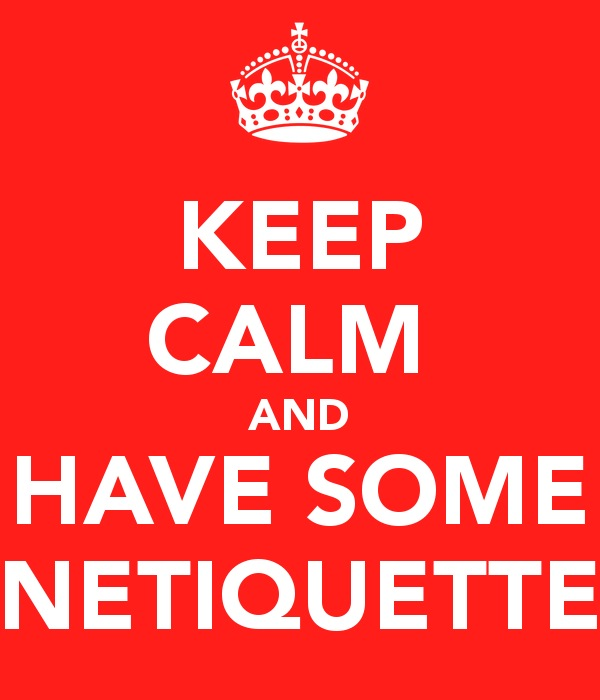

Project Intro
For our next project we will be learning about Netiquette. Netiqette is a set of rules for how to act online. We will be using Brainpop, and other videos, and doing activities online that will help us remember some rules that will help make sure that what we do on the computer will not be embarrassing or hurtful to ourselves and others.
Teaching Point:
Today we will learn what Netiquette is.
Rules for Online Behavior
Remember - what you do online is public. That means anyone can see it. Just like it is important to behave in a way that you can be proud of in the real world, it is just as important to behave well online. What you say or do on Social Networks, Message Boards, Blogs, and other online places can be helpful or hurtful. Since more people can see what you do online, and it stays up for longer, it is very inportant that you act in a way that you can be proud of, and lets people know what a good person you are. The link below is to a Brainpop Video about Netiquette.
 Click here to Watch the Brainpop Video on Netiquette
Click here to Watch the Brainpop Video on NetiquetteToday's Assignment
Copmplete 2 of the 3 Brainpop Activities on Netiquette. You can choose which two. Feel free to watch the video (on silent, with captions) if you forget some of what it is about. When you are done, take a screenshot of your work and post it on your blog.
Click here to go to the Brainpop Netiquette Activites PageBack to School Portal